Harvest Festival (Arcane Curiosities Vol.6)
Twelve animated harvest-fair props for top-down farming and cozy games: a bonfire that ignites, festival lanterns, a bobbing-for-apples tub, a cider press, a windmill, a wheat sheaf, hay bales, a beehive, a chicken coop, a hay cart, an autumn tree and a feast table. Three of them are free in the Free Harvest Starter.
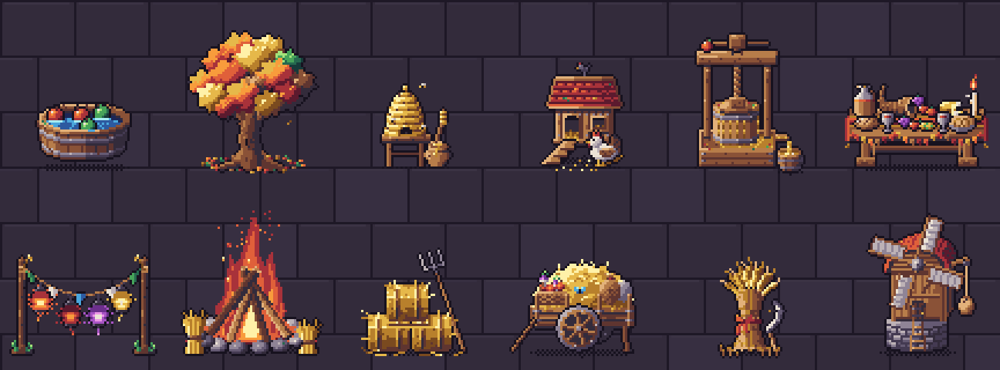
All 12 props · 37 animations
Every prop below is shown at its real frame rate. Sprites are drawn in top-down 3/4 view (key light top-left) at 32–64 px, with one 32-colour palette shared by every Arcane Curiosities volume, so props from different volumes sit together in one scene.
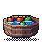
Apple Tub
Hooped half-barrel of water with floating red and green apples; 'idle' bobs and ripples, 'splash' ducks an apple with a crown of droplets, 'empty' leaves one apple circling. Bobbing-for-apples games, fairs, minigames.
48×48 px · 3 animations: empty (16f), idle (16f), splash (8f, once)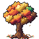
Autumn Tree
Round-crowned autumn tree in orange, red and gold leaf clumps over a ring of fallen leaves; 'idle' sways and drops spinning leaves, 'gust' leans into a flurry, 'apples' is an apple tree that drops and bounces an apple. Orchards, parks, village greens.
64×64 px · 3 animations: apples (16f), gust (12f), idle (16f)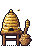
Beehive
Coiled straw skep on a plank stand with a honey pot and dipper; 'idle' circles three bees, 'swarm' sends a dozen angry bees around it, 'honey' drips honey into the pot. Farms, gardens, quest givers, hazards.
32×48 px · 3 animations: honey (16f), idle (16f), swarm (12f)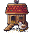
Chicken Coop
Plank hen house with a red shingled roof, ramp and a white hen in front; 'idle' pecks, 'roost' sits in the doorway with a second hen peeking out, 'egg' fluffs up and lays an egg. Farms, villages, pets.
48×48 px · 3 animations: egg (8f, once), idle (16f), roost (16f)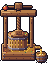
Cider Press
Wooden screw press over a slatted basket of crushed apples, pouring into a bucket; 'press' turns the bar and streams juice, 'full' froths with a wasp buzzing round. Orchards, farms, crafting stations.
48×64 px · 3 animations: full (12f), idle (16f), press (16f)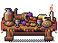
Feast Table
Long trestle harvest table with a lattice pie, cornucopia, cheese, bread, cider jug and candle; 'idle' steams and flickers, 'toast' clinks goblets with a bee overhead, 'cleared' is the crumb-strewn aftermath. Feasts, festivals, inns, cutscenes.
64×48 px · 3 animations: cleared (16f), idle (16f), toast (12f)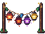
Festival Lanterns
Two posts strung with round paper lanterns and bunting flags; 'idle' glows and sways, 'windy' swings hard with snapping flags, 'unlit' is the daytime version. Fairs, market squares, night scenes.
64×48 px · 3 animations: idle (16f), unlit (16f), windy (12f)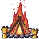
Harvest Bonfire
Big festival bonfire of split logs in a stone ring with straw sheaves; 'idle' roars with sparks and heat shimmer, 'ignite' catches and climbs the logs, 'embers' burns down to coals and smoke, 'unlit' waits. Festivals, camps, light sources.
64×64 px · 4 animations: embers (16f), idle (16f), ignite (10f, once), unlit (8f)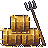
Hay Bales
Three tied straw bales stacked with a leaning pitchfork; 'idle' flutters loose wisps, 'mouse' has a field mouse peek out and duck back, 'harvest' adds an apple basket and falling leaves. Farms, barns, cover, hiding spots.
48×48 px · 3 animations: harvest (16f), idle (16f), mouse (12f)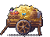
Hay Cart
Two-wheeled farm cart heaped with hay, sacks and a basket of apples and turnips; 'idle' flutters with a butterfly, 'rolling' turns the spoked wheels, 'festival' adds ribbons and a leaf garland. Farms, roads, fairs, merchants.
64×48 px · 3 animations: festival (16f), idle (16f), rolling (8f)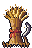
Wheat Sheaf
Bound sheaf of golden wheat with a red ribbon and a sickle; 'idle' nods in a breeze, 'gust' bends hard with stalks blowing past, 'festival' adds a woven straw star, streamers and flowers. Fields, harvest quests, decor.
32×48 px · 3 animations: festival (16f), gust (12f), idle (16f)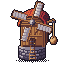
Windmill
Fieldstone-and-timber windmill with four cloth sails and a sack hoist; 'idle' turns the sails, 'fast' spins them with streaks and a swinging sack, 'still' stops them with a sail furled and a bird on the cap. Farms, villages, landmarks.
64×64 px · 3 animations: fast (8f), idle (16f), still (16f)What's in the ZIP
PNG sprite sheets with frame JSON (anchor at the feet), GIF previews, the palette (.gpl, .hex, .png), a Godot 4 project with a SpriteFrames resource and scene per prop plus a demo scene, catalog.json and SKILL.md for AI coding agents. Commercial use in your games is allowed; reselling or redistributing the art as assets is not.